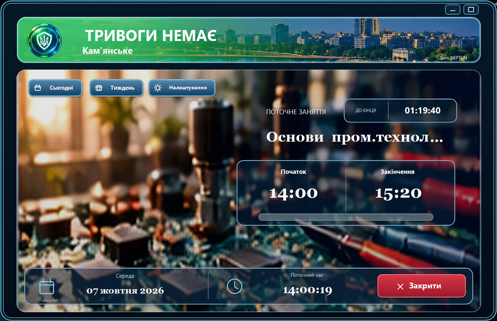
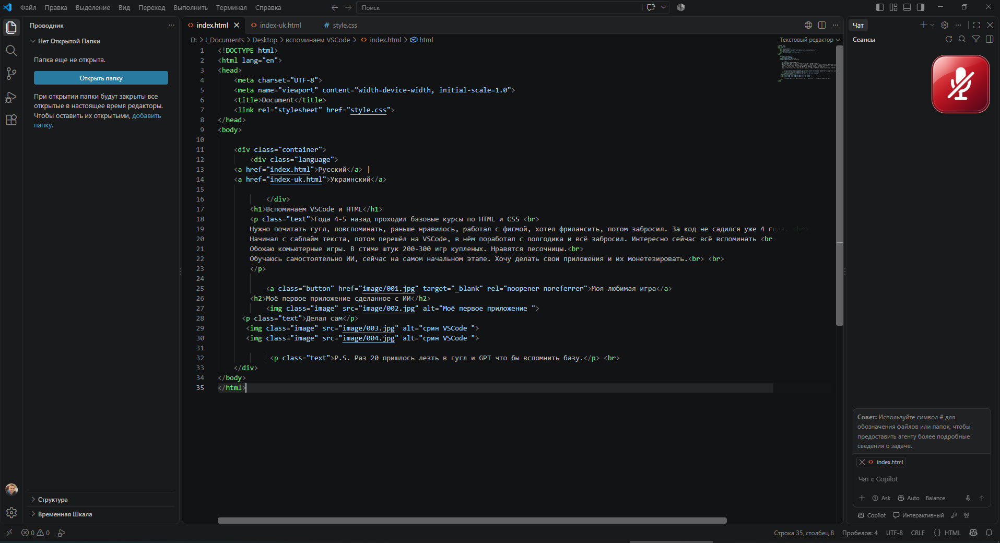
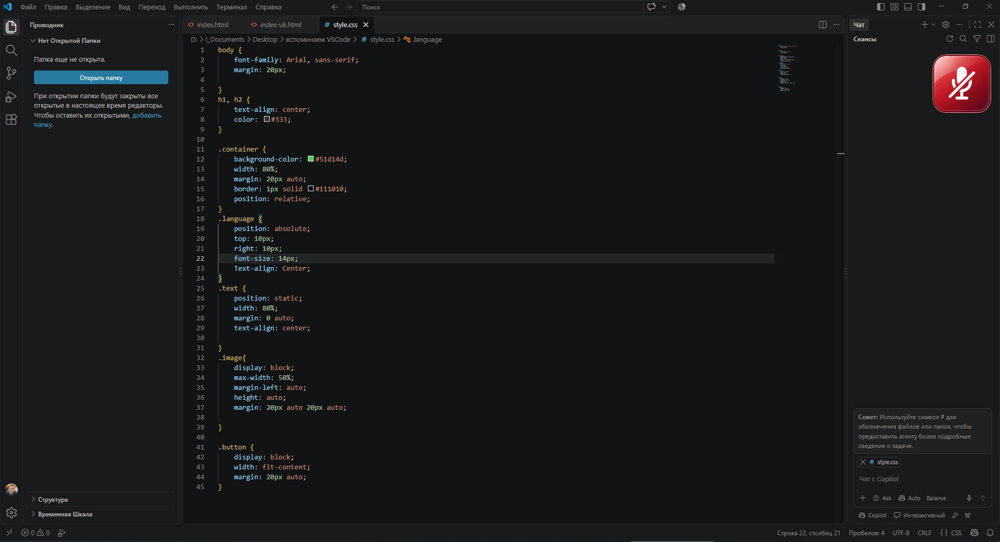

Років 4-5 тому проходив базові курси з HTML та CSS
Потрібно почитати гугл, згадувати, раніше подобалося, працював із фігмою, хотів фрілансити, потім закинув. За код не сідав уже 4 роки.
Починав із саблайм тексту, потім перейшов на VSCode, у ньому попрацював із півроку та все закинув. Цікаво зараз все згадувати.
Люблю комп'ютерні ігри. У стимі штук 200-300 куплених ігор. Подобаються пісочниці.
Навчаюся самостійно ШІ, зараз на початковому етапі. Хочу робити свої програми та їх монетезувати.
Клас гуглівський не зручний тим, що не розумієш який зараз буде предмет та коли він почнеться.
У хедері опитується та показує три статуси червоний/жовтий/зелений - потрібен що розуміти будуть заняття онлайн чи ні.
Розклад бере з Google календаря.
У мейні показується якийсь найближчий предмет та який час залишився до початку заняття.
За 10 хвилин голосове нагадує
За 2 хвилини голосове нагадування та розгортає сторінку з класрумом.
Таймер із прогрессбаром скільки заняття йде.
Також додав настройки(додати/видалити предмет та інше)

Робив сам


P.S. Раз 20 довелося лізти в гугл та GPT щоб згадати базу.